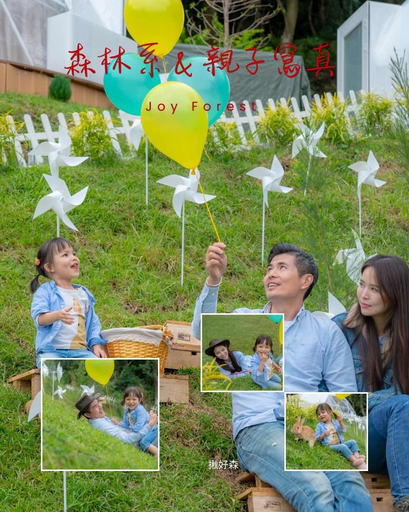

聲音：天然的白噪音
風與樹葉會掩蓋掉許多尷尬空白，讓對話不必一直填滿。這對聚會、小慶生或安靜相處都很友善。
光線：拍照與情緒
樹影會把光變得柔和；傍晚到夜間，暖色燈光更容易「把氣氛做起來」。但仍要注意用火與燈具安全。
距離：社交的緩衝
相較密閉包廂，戶外讓人有更多自然退場與換氣的空間，對混合團體（朋友＋同事＋家人）特別重要。
它賣的不只是場地，而是把聲音變溫柔、把距離變舒服的能力。

風與樹葉會掩蓋掉許多尷尬空白，讓對話不必一直填滿。這對聚會、小慶生或安靜相處都很友善。
樹影會把光變得柔和；傍晚到夜間，暖色燈光更容易「把氣氛做起來」。但仍要注意用火與燈具安全。
相較密閉包廂，戶外讓人有更多自然退場與換氣的空間，對混合團體（朋友＋同事＋家人）特別重要。